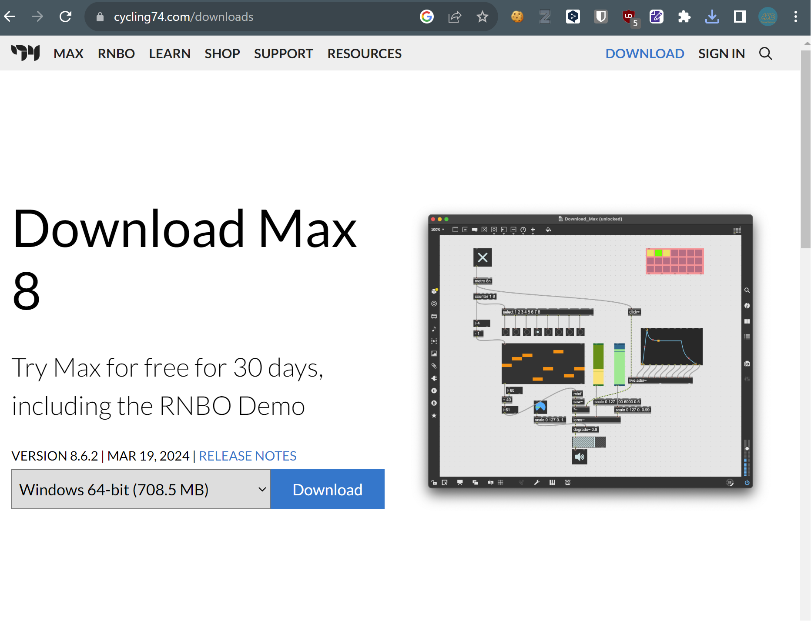

準備 - ソフトウェア編
VisVibでは、以下2種類のアプリケーションを使用します。
- 音声・照明アプリケーション
- Cycling'74 Maxというソフトウェア上で動作します。
- 映像アプリケーション
- 照明制御のみで映像を使用しない場合は、インストール不要です。
音声・照明アプリケーション
Cycling' 74 Maxのインストール
センサー用アプリケーションを実行するためのソフトウェアです。Maxは有料のソフトウェアですが、完成したプログラムを実行するだけなら無料で利用可能です。
以下のURLから、OSに合わせたものをダウンロードします。
バージョンは最新版（v8.3以上）のものを使用してください。
https://cycling74.com/downloads

ダウンロードしたら、zipファイルを解凍して、インストーラーアプリケーションを実行して、指示に従ってください。
Note
Mac(Apple Silicon CPU)を使用している方は、インストール後/Applications/Max.appを右クリック→情報を見るから”Rosettaを使用して開く”にチェックを入れてください。
これは、DMX USB PROと接続する用のエクスターナルオブジェクトがIntel版のみに対応しているためです。
音声・照明アプリケーションファイルのダウンロード
音声・照明アプリケーション（Maxプロジェクトファイル）は、以下のURLから最新版をダウンロードできます。
https://github.com/ccbtokyo/ccbt_tonechime_sensor/archive/refs/heads/main.zip
ダウンロードしたら、zipファイルを解凍して、フォルダごとデスクトップなどわかりやすい場所に移動しておきます。
ccbt_tonechime_sensor/maxproject/ccbt_tonechime_sensor/ccbt_tonechime_sensor.maxprojというファイルをダブルクリックすると、音声・照明アプリケーションが立ち上がります。
Note
設定のデータなどはccbt_tonechime_sensor/maxproject/ccbt_tonechime_sensor/data/main.jsonというファイルに書き込まれています。もし新しいコンピューターで前の設定を引き継ぎたい場合は、フォルダを丸ごと前のコンピュータからコピーしてくるか、main.jsonを移動して上書きしてください。
映像アプリケーションのダウンロード
以下のURLから、最新のバージョンのToneChime_VideoSystem.zipをダウンロードしてください。
https://github.com/ccbtokyo/ToneChime_VideoSystem/releases
ダウンロード後は、zipファイルを展開して、フォルダごとデスクトップなどわかりやすい場所に配置してください。
Windowsでは、フォルダ内の、ToneChime_VideoSystemが映像アプリケーション本体です。
macOSでは、Tonechime_VideoSystem_MacOS.appというファイルがアプリケーション本体です。
ダウンロードしてから初回の起動時はシステムに起動をブロックされることがありますが、回避可能です。トラブルシューティングを参照してください。